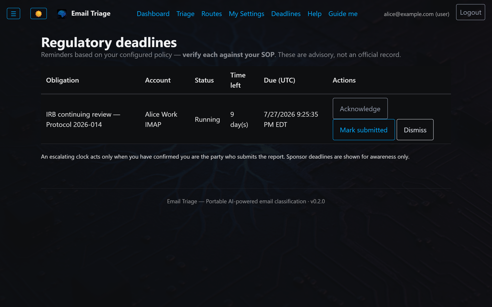

Concrete scenarios where Email Triage delivers measurable outcomes. Each maps to an engagement model and links to the matching fractional-CTO engagement with Craig.
Profile. PI, clinical investigator, post-doc, or research-track physician. 200+ messages/day across journal alerts, NIH/sponsor communications, IRB notices, society newsletters, trainee updates, manuscript reviews, and coordinator threads. HIPAA-aware by institutional default.
90 minutes of newsletter / journal-alert skimming first thing, another 30 of inbox triage between clinic and bench. Most of it is mechanical — categorize, file, skim-and-discard. None of it is research.
All 30+ subscription feeds collapse into one 7 AM digest, 80–120 article cards organized by source. An estimated 60–90 minutes/day recovered for a subscription-heavy inbox. Scan it with your first coffee, click through to the 5–8 articles worth reading, archive the rest by closing the tab.
sponsor, with a drafted reply waiting for review.A Regulatory Deadline Clock watches for the mail that starts an FDA IND / EU CTR SUSAR / IRB reporting clock (detection is opt-in), tracks it on a working-day calendar, and escalates before it lapses — a human confirms every clock and the AI never computes the date. A Topic / Study Digest pulls every message tied to one study — sponsor, IRB, and coordinator inboxes at once — into a single scheduled digest, with a thumbs up/down that teaches which senders matter. PHI never leaves your servers.

The Deadlines view — an armed IRB continuing-review clock (Running, working-day countdown, explicit due date, Acknowledge / Mark-submitted / Dismiss). Detection is opt-in and a human confirms every clock; sponsor FDA/EU deadlines surface as informational only.
Total recovered: an estimated 1.5–2 hours/day, with full transparency over what the system handled and what's waiting for you.
Context. A litigation boutique, in-house legal team, or solo practitioner whose inbox is a running record of privileged client communications and attorney work-product. The volume is real — client threads, opposing counsel, court notices, e-filing alerts — but the sharper concern is where the mail goes the moment an AI reads it.
Send a privileged inbox through a hosted, third-party AI service and you have handed a client's confidential communications to an outside party that now received them. That outside party is a new custodian a subpoena can reach in discovery, and its receipt of the mail is a disclosure the other side can point to when arguing the privilege was waived. The convenience of a hosted model quietly widens the circle of who holds the file.
The classifier runs on the firm's own hardware; privileged mail and work-product are read and sorted on-box and never transit an outside model. There is no third-party AI vendor to name in a subpoena and no external disclosure to build a waiver argument from — the mail stays under the firm's sole control, the way the file room already does. Sensitive-matter routing, drafted replies held for a lawyer's review (never auto-sent), and a tamper-evident log of who opened which matter round it out.
This is an infrastructure-and-strategy posture, not legal advice — confirm the privilege and discovery implications for your jurisdiction with your own counsel.
Context. M365 or Google Workspace-based. HIPAA-regulated by default. Need to demonstrate compliance posture to insurers + auditors.
Context. Multiple client mailboxes (separately authenticated). Need to keep client communications isolated for confidentiality. Calendar coordination across 8–12 active clients per week.
This is how I run my own consulting practice.
Context. A lab with N researchers all using shared mail infrastructure. Each researcher has their own writing style and their own preferences. Privacy: one researcher shouldn't see another's mail or drafts.
Context. A self-hosting enthusiast who wants to run everything on their own machines. (For the technically-inclined: containers on Podman, reached over a Tailscale mesh, with the AI model already running locally on their own GPU via Ollama.)
ghcr.io/unlimited-data-works-llc/email-triage, verify the SLSA-3 provenance, run on Podman with a systemd quadlet.Or if it's something else entirely — that's worth a conversation too.
Talk to Craig